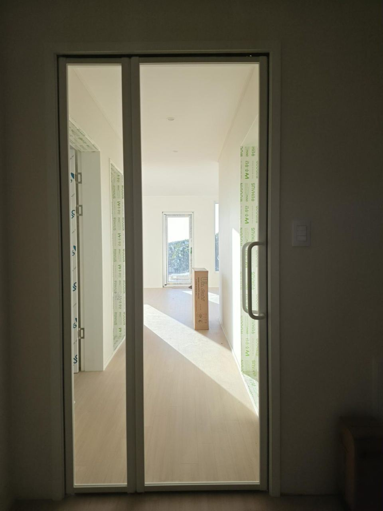
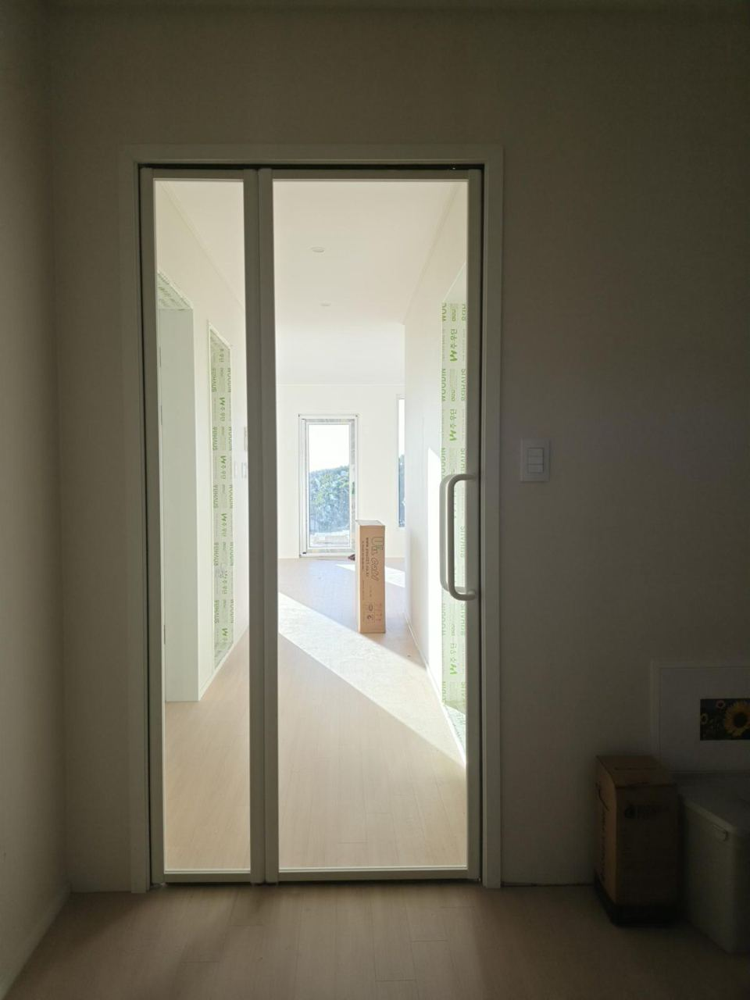
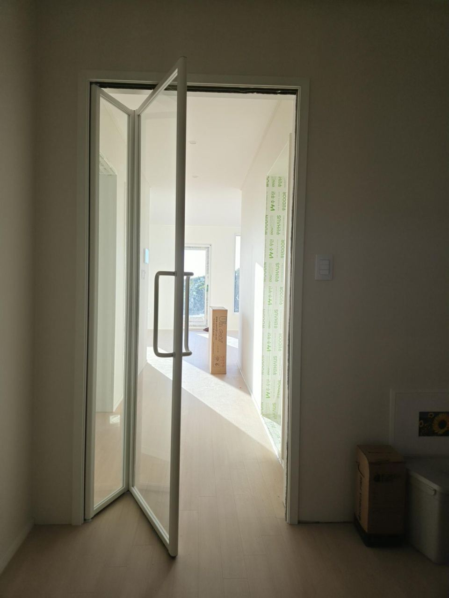
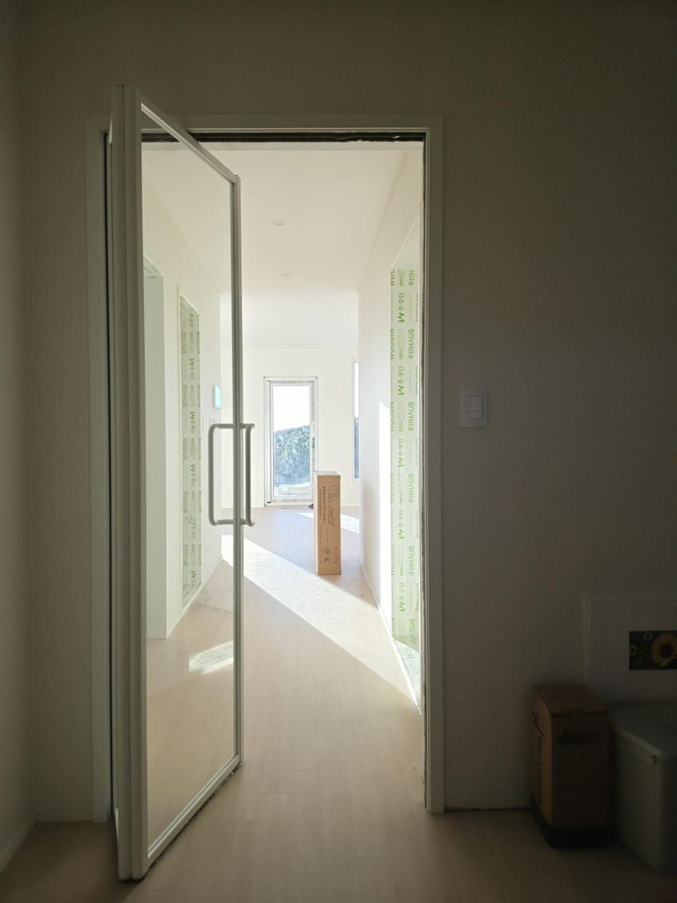
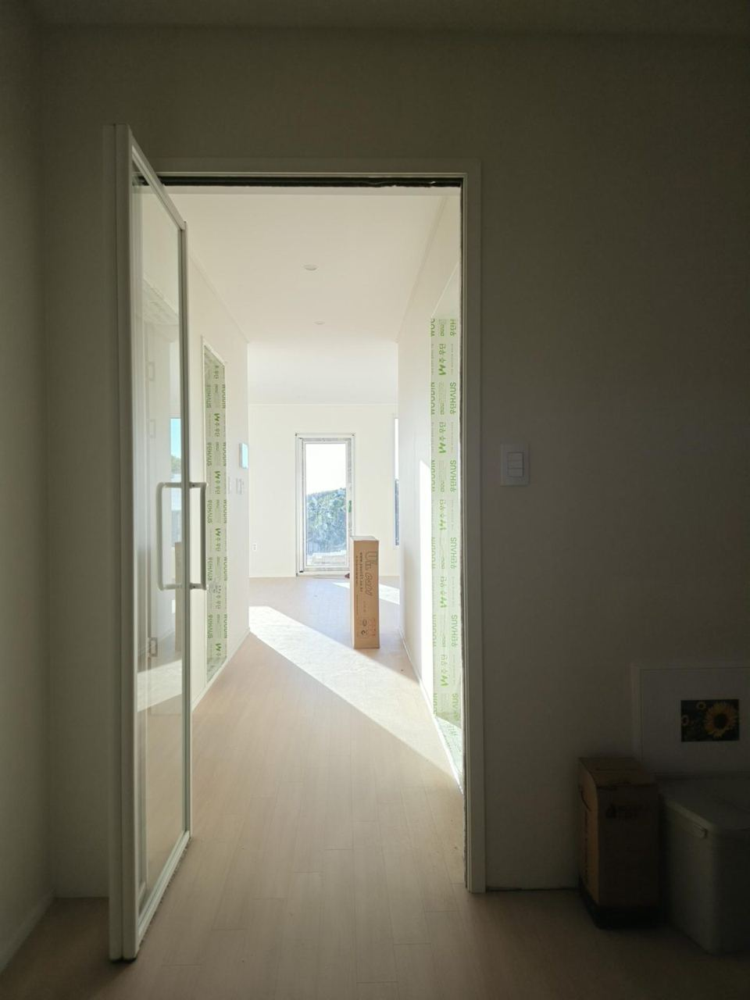
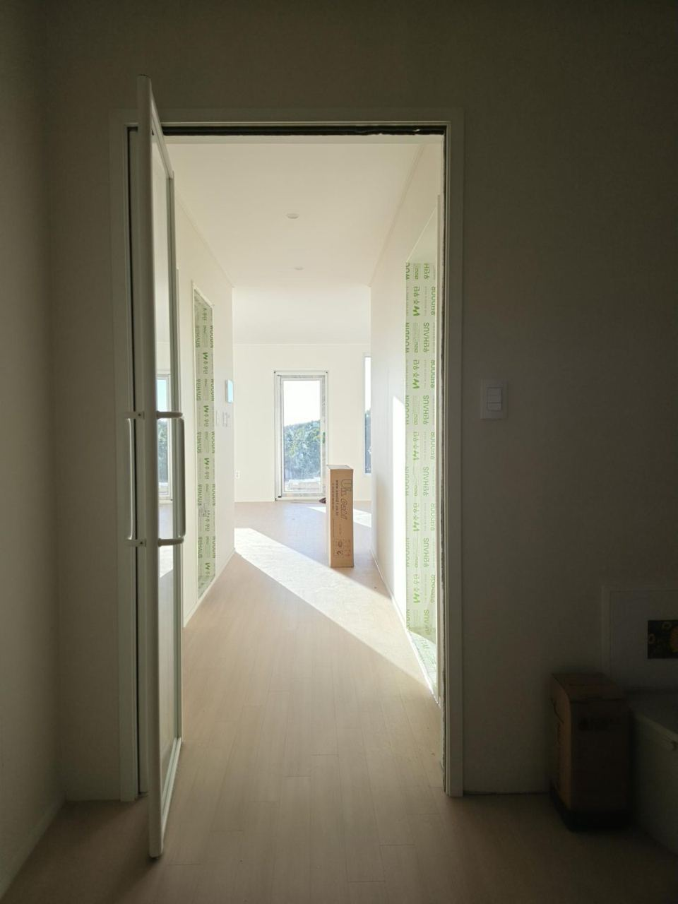
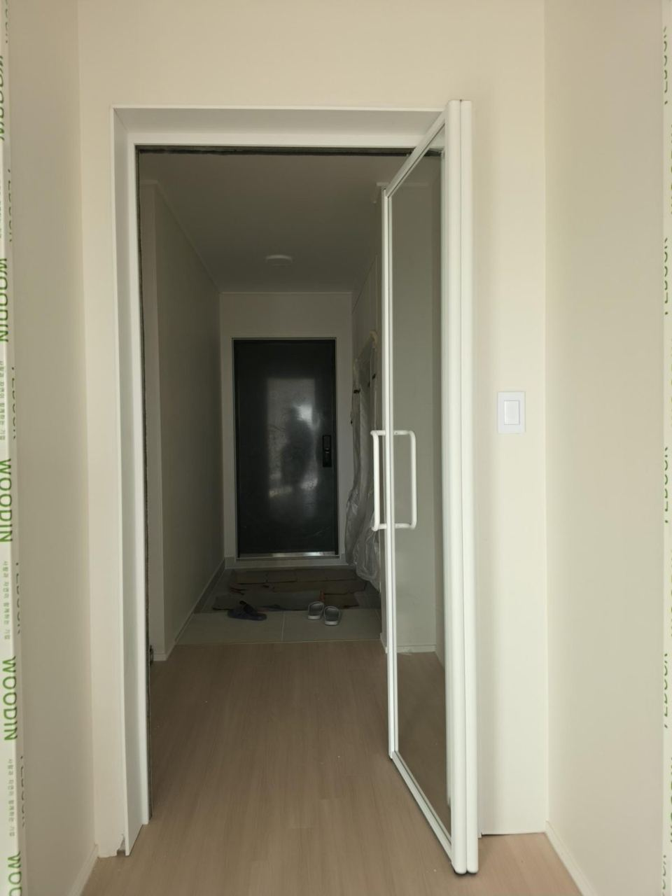
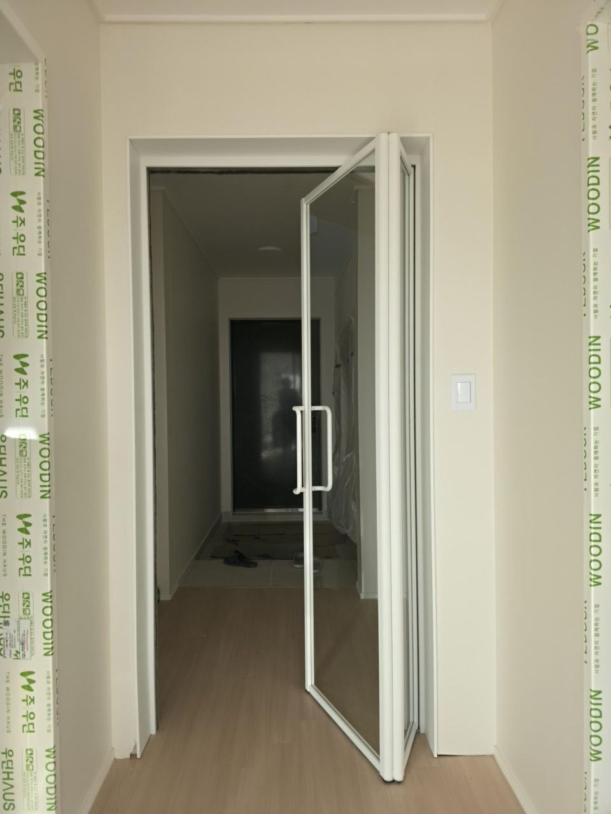
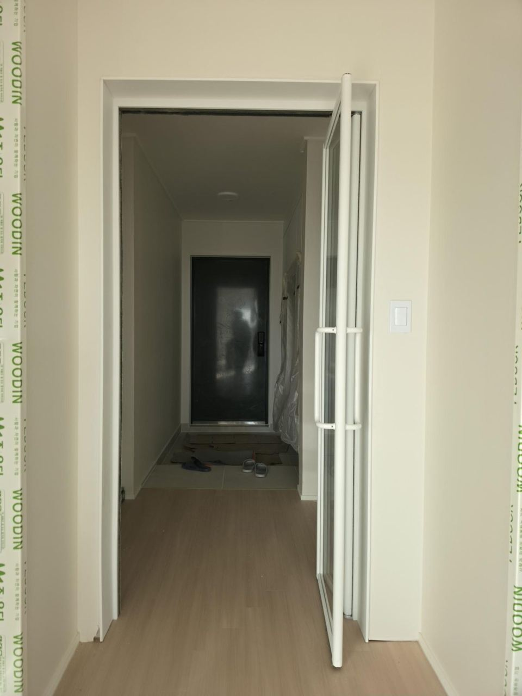

시공현장 경기도 안성시 신양복리 733-1번지 단독주택
색상 영림 중백색
유리 투명 강화유리
중문 형태 스윙도어 (2짝 접이식)
손잡이 화이트 롱바 손잡이
색상 영림 중백색
유리 투명 강화유리
중문 형태 스윙도어 (2짝 접이식)
손잡이 화이트 롱바 손잡이
좁은 공간에서 가장 넓게 열리는 스윙도어
스윙도어는 두 짝의 문이 접히면서 한쪽 벽으로 붙는 구조입니다. 슬라이딩(연동) 중문은 열어도 문짝이 겹쳐 서 있는 만큼 통로가 줄어들지만, 스윙도어는 문짝이 접혀서 옆으로 빠지기 때문에 문틀 폭 대부분을 그대로 통로로 쓸 수 있습니다.
이런 집에 특히 잘 맞습니다.
큰 문 한 짝이 크게 돌아 나오는 일반 여닫이와 달리, 두 짝으로 나뉘어 접히기 때문에 문이 열릴 때 차지하는 공간도 작습니다. 현관이나 복도가 좁은 집, 신발장 앞 공간이 빠듯한 집, 짐이나 가구를 자주 들이는 집에 추천합니다.
큰 문 한 짝이 크게 돌아 나오는 일반 여닫이와 달리, 두 짝으로 나뉘어 접히기 때문에 문이 열릴 때 차지하는 공간도 작습니다. 현관이나 복도가 좁은 집, 신발장 앞 공간이 빠듯한 집, 짐이나 가구를 자주 들이는 집에 추천합니다.
영림 중백색과 투명 강화유리
화이트 계열의 벽과 몰딩에 맞춰 영림 중백색으로 제작했습니다. 투명 강화유리를 넣어 현관에서 거실까지 시야가 트여 집이 더 넓고 밝아 보이며, 강화유리라 깨지더라도 잘게 부서지는 안전유리입니다. 손잡이는 프레임과 같은 화이트 롱바 손잡이로 깔끔하게 맞췄습니다.
시공 사진 – 닫힘부터 완전 개방까지









자주 묻는 질문
스윙도어 중문의 가장 큰 장점은 무엇인가요?
두 짝의 문이 접히면서 한쪽 벽으로 붙기 때문에, 좁은 공간에서도 문틀 폭 대부분을 통로로 쓸 수 있어 가장 넓게 개폐됩니다.
스윙도어와 3연동 중문은 어떻게 다른가요?
3연동 중문은 문짝이 옆으로 밀려 겹쳐 서 있어 그만큼 통로가 줄어듭니다. 스윙도어는 문짝이 접혀 한쪽으로 빠지므로 같은 문틀이라면 더 넓게 열립니다.
좁은 현관에도 설치할 수 있나요?
네. 두 짝으로 나뉘어 접히므로 문이 열릴 때 차지하는 공간이 작아 좁은 현관에 오히려 유리합니다.
단독주택도 시공하나요?
네. 아파트, 단독주택, 상가 모두 현장 실측 후 맞춤 제작해 시공합니다.